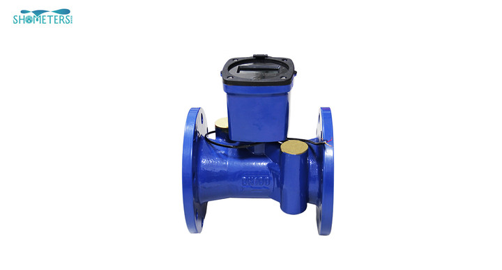

E-mail:
info@sh-meters.comCall Us:
+86 131319847161. Overview: Ultrasonic heat meter, an intelligent meter composed of paired temperature sensor, flow sensor and calculator. By processing the temperature difference collected by the sensor and the time difference of the sound wave passing through the fluid, the calculator can achieve accurate measurement of flow rate, heat or cooling capacity, and can provide records and data transmission for various applications of heating or cooling pipelines.
Suitable for energy metering and charging projects such as central heating, central air conditioning and combined heating and cooling.
2. Installation requirements:
All components of the heat meter (including flowmeter, temperature sensor and calculator) should be installed in a location that avoids exposure to water, flooding, freezing, chemical and electromagnetic pollution, and facilitates disassembly and meter reading.
1. Installation of flow sensor:
1) Thoroughly clean the system piping before installation to remove the debris such as hemp, sand and gravel in the branch pipe to avoid causing flowmeter failure;
2) The flowmeter is installed horizontally or vertically to the pipeline;
3) The direction of water flow should be consistent with the arrow mark on the flowmeter;
4) The diameter of the front and rear pipes must be consistent with the diameter of the flowmeter;
5) Straight pipe section should be left 5 times before DN and 3 times after DN (DN is the nominal diameter of heat meter);
6) It is recommended to be installed in the inlet pipe;
7) After installation, lead seal should be made between the connecting nut and the heat meter, and between the temperature measuring ball valve and the temperature sensor.
2. Installation of temperature sensor:
1) The temperature sensor with a red label should be installed on the water inlet pipe, and must be installed on the meter body or a dedicated temperature measuring ball valve, temperature measuring tee, temperature measuring seat;
2) The temperature sensor with blue label should be installed on the return water pipe, and must be installed on the meter body or special temperature measuring ball valve, temperature measuring tee, temperature measuring seat;
3) The temperature sensor leads shall not be increased, decreased or changed at will.
3. Daily maintenance:
1. After the heat meter is installed and used, it is necessary to make regular patrols to check the operation status of the heat meter and whether the battery voltage is normal;
2. When the flow rate is significantly reduced and the heating is affected, the filter should be drained and cleaned;
3. When the running time of the heat meter reaches 6 years (2 verification cycles) or less than 6 years but the display data is not clear or the voltage shows "V", the battery should be replaced by a professional technician to avoid affecting the heat meter. normal work;
4. When the signal status (display the 12th screen of the query status) displays “d0000408”, it indicates that the flow collection is abnormal or not full, and “d0000814” indicates that the temperature collection is abnormal.
